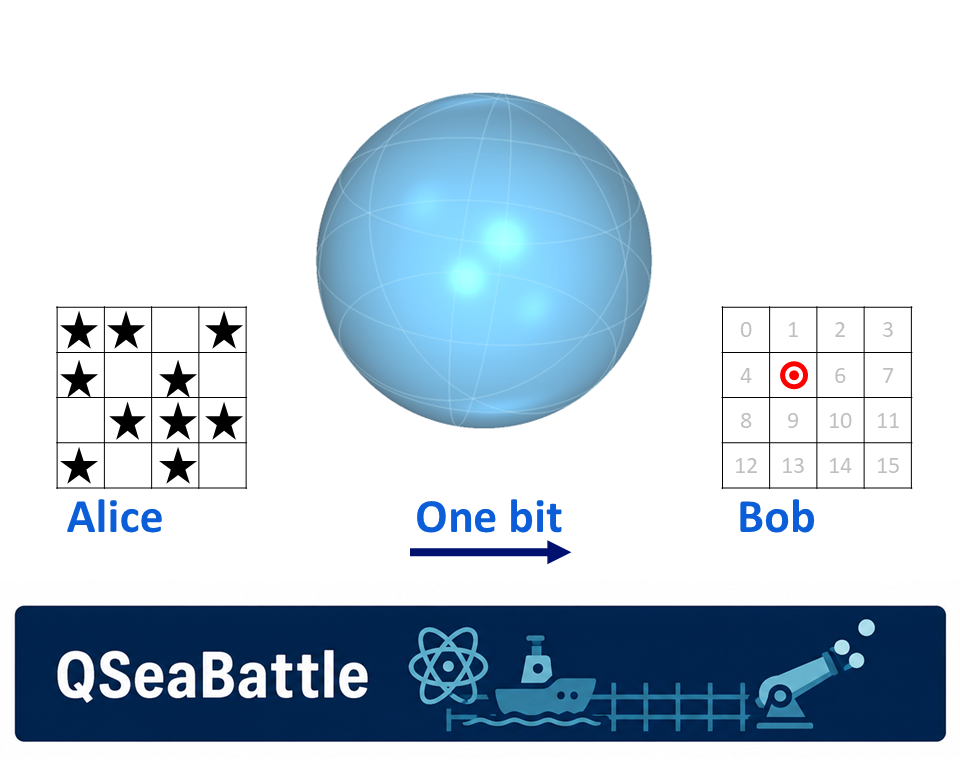
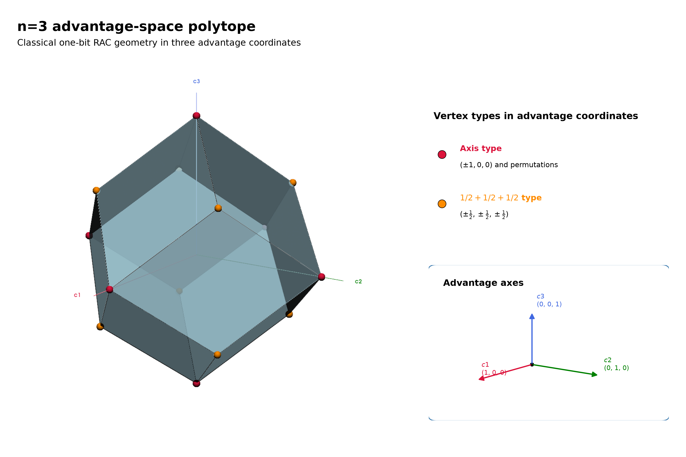
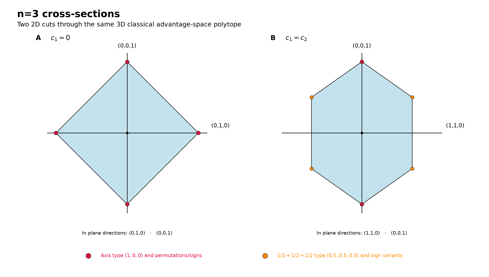
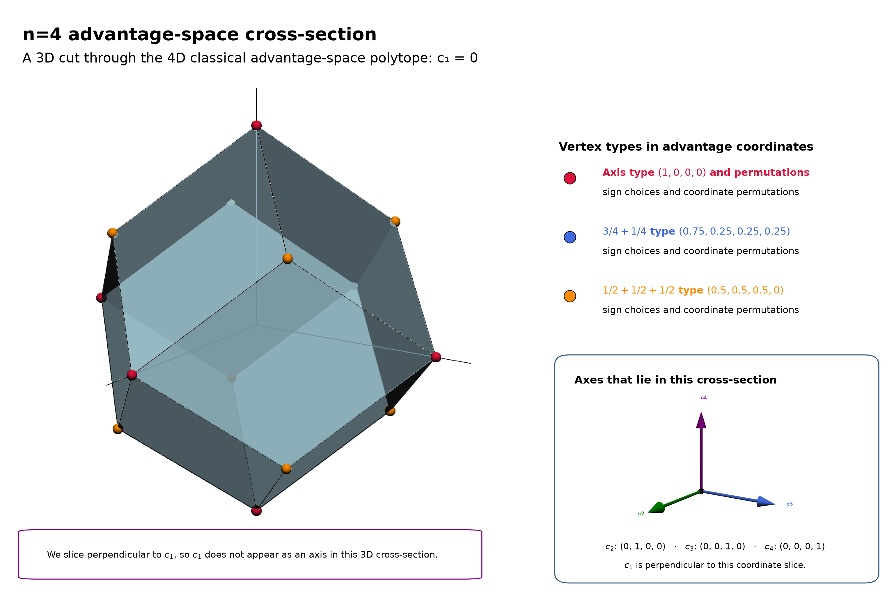
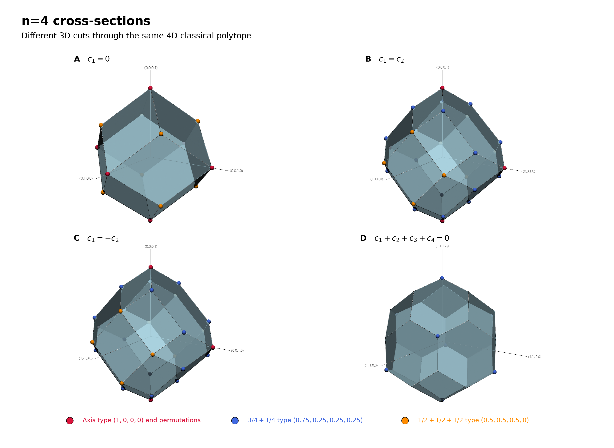
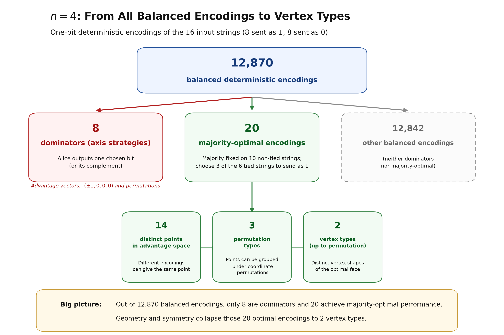
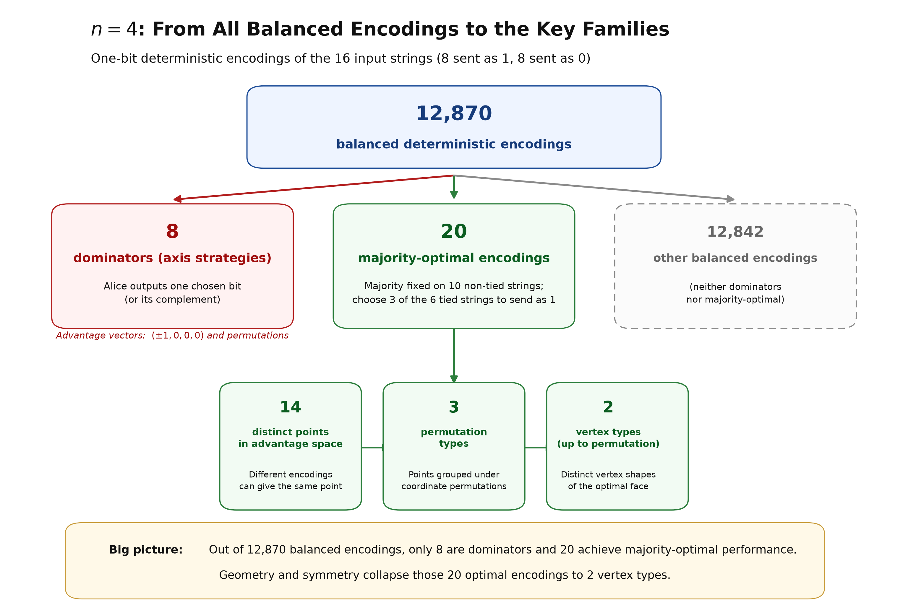
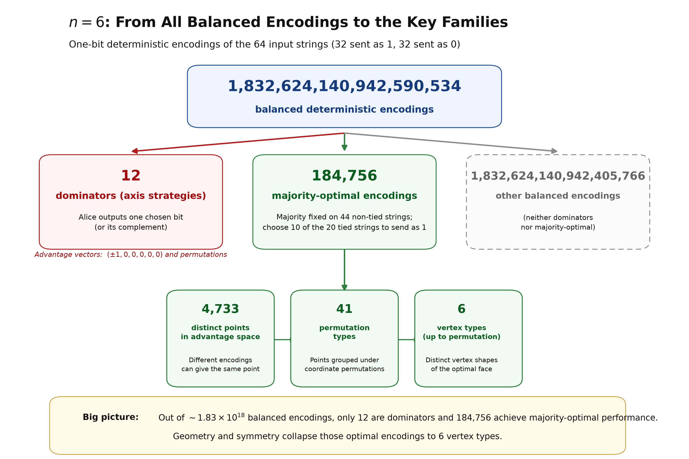

A guessing game becomes geometrically more and more complicated — until we add quantum mechanics.

Feature image: Alice knows the board, Bob knows which cell matters, and only one bit connects them. The sphere hints at the geometry that appears when they add a quantum resource. Image by author.
Alice and Bob are playing an almost trivial guessing game. Alice sees a board of bits, Bob has to guess the value at one randomly chosen position, and Alice may send him only a single bit before she knows which position he will be asked about.
Yet when we try to describe all the strategies they can use, something unexpected happens. The classical strategies form a many-faced polytope. For n = 4 the strategy polytope lives in four dimensions, and different slices through it produce strikingly different shapes. For n = 6, merely resolving the tied inputs gives Alice 184,756 equally optimal deterministic strategies.
So what happens when we add quantum mechanics? Surely the geometry should become even more complicated. It doesn’t.
For the quantum construction we will use, all those different shapes collapse onto one of the simplest objects in geometry: a sphere. How can adding quantum mechanics make the problem simpler?
Alice sees a board containing n bits, while Bob is asked about one randomly chosen position. His job is simple: guess whether the bit at that position is 0 or 1. There is just one catch: Alice may send Bob one bit, and Bob does not get to tell her which position he will be asked about.
For n = 2, Alice might simply send the first bit. Bob then answers perfectly when asked about position 1, but learns nothing useful about position 2. Sending the second bit merely reverses the problem. Classically, Alice and Bob therefore have to decide where to place their advantage.
We can measure that advantage separately for every possible question. Let Pᵢ be Bob’s probability of answering correctly when asked for bit i.
cᵢ = 2Pᵢ − 1.
So cᵢ = 0 means Bob is doing no better than a coin toss, while cᵢ = 1 means he always gets bit i right. A negative value simply means his answer is biased in the wrong direction. We call cᵢ the advantage for question i.
Instead of describing everything Alice and Bob do, we can now represent a complete strategy by a single advantage vector
(c₁, c₂, …, cₙ).
For two questions that point lives on a page. For three, it lives in ordinary three-dimensional space. For four or more, it lives somewhere we can no longer draw directly. This sounds like another complication. Instead, it gives us a surprisingly powerful question:
What is the shape of everything Alice and Bob can possibly achieve?
Let us start with n = 3, where we can still see the complete strategy space. A strategy is now a point (c₁, c₂, c₃). An axis strategy, for example, can put all the advantage on one question, giving a point such as (1, 0, 0). A majority strategy spreads its advantage over all three, giving (½, ½, ½).
Flipping answers or exchanging indices produces symmetry-related versions of these strategies. Alice and Bob are also not restricted to choosing one deterministic strategy. They can agree beforehand to randomly alternate between two of them. If they use each half of the time, the resulting advantages are simply the average of the two points.
Vary the probability and every point on the line between those strategies becomes reachable. Mix more strategies and the regions between them fill in. So the complete classical strategy space is convex.
For n = 3 its boundary is the object we encountered in a previous post, shown in Figure 1: a polytope known as a rhombic dodecahedron.

Figure 1: The classical strategy space for three possible questions. Each point represents the advantage Bob can achieve for the three possible indices. Despite the many deterministic strategies, the boundary has just two types of vertices: axis strategies (crimson) and majority strategies (dark orange). Image by author.
Alt text: 3D light-blue classical polytope in advantage coordinates c₁, c₂, c₃, with crimson axis-type vertices and dark-orange majority-type vertices.
The geometry is already doing useful work. Many apparently different strategies are merely permutations or sign-flipped versions of one another. Instead of cataloguing every rule Alice and Bob might use, we can study the shape those rules produce.
But now increase the game to four questions. A strategy becomes (c₁, c₂, c₃, c₄). We have entered four dimensions.
We cannot draw a four-dimensional object directly, but we can cut through it. This is much like a CT scan. A three-dimensional object can be studied through two-dimensional slices; similarly, a four-dimensional object can be studied through three-dimensional slices.
Figure 2 demonstrates the idea while we are still safely in three dimensions. Cut the n = 3 polytope with the plane c₁ = 0 and its cross-section is a diamond. Turn the cutting plane so that c₁ = c₂, and the same object produces a hexagon.

Figure 2: Two 2D cross-sections through the same three-dimensional classical strategy space. A cut perpendicular to (1,0,0) produces a diamond; rotating the cut to be perpendicular to (1,−1,0) produces a hexagon. Cross-sections let us study the same geometry when the full object becomes impossible to draw. Image by author.
Alt text: Two 2D cross-sections of the same n = 3 classical polytope. The c₁ = 0 section is a diamond with crimson vertices; the c₁ = c₂ section is a hexagon with crimson and dark-orange vertices.
Nothing about the underlying object changed. We simply looked through it from another direction.
So, let us do the same for n = 4. The simplest cut is c₁ = 0. We fix Bob’s advantage on the first question at zero and look at everything Alice and Bob can still achieve on the remaining three. The result is Figure 3.

Figure 3: A three-dimensional cross-section of the four-dimensional classical strategy space. We can no longer draw the complete n = 4 object, but we can cut through it just as we did in Figure 2. Here the slice c₁ = 0 already reveals a richer collection of vertices and faces. Image by author.
Alt text: A 3D cross-section of the 4D classical advantage-space polytope at c₁ = 0. The translucent blue polytope contains several color-coded vertex types and three labelled in-plane directions.
But one slice can be deceptive. Figure 4 shows four different cuts through exactly the same four-dimensional classical object.

Figure 4: Four 3D cross-sections through the same four-dimensional classical strategy space. Different cutting directions reveal strikingly different three-dimensional shapes. The complexity is not an artifact of the projection; it is built into the classical geometry. Image by author.
Alt text: Four 3D cross-sections of the same 4D classical polytope, perpendicular to (1, 0, 0, 0), (1, −1, 0, 0), (1, 1, 0, 0), and (1, 1, 1, 1). The resulting blue polyhedra have visibly different shapes.
The first is the c₁ = 0 slice we have just seen. The other cutting planes are tilted in different directions.
Same game. Same four-dimensional object. Completely different-looking cross-sections.
And this is where our apparently simple guessing game starts to become less simple.
Where does this classical complexity come from? Surprisingly, much of it comes from something we already encountered in the first QSeaBattle post: ties.
When n is odd, a majority vote can never end in a draw. Every input has a unique majority. For even n, some boards contain exactly as many zeros as ones. Alice may then choose either value without changing the average success probability. That freedom looks innocent. Geometrically, it is not.
For n = 4 there are 16 possible input strings, six of which are tied. A balanced deterministic encoding divides the 16 strings equally between Alice’s two possible messages, giving 12,870 possible balanced encodings. Eight of these are the simple axis, or ‘dominator’, strategies: Alice sends one chosen bit (or its complement), placing all of Bob’s advantage on a single question.
Most of the remaining encodings are not optimal. Once we restrict ourselves to the majority-optimal choices, only 20 deterministic encodings remain. Those 20 collapse to 14 distinct points in advantage space, then to three classes under permutation symmetry, and ultimately to only two vertex types.

Figure 5: For n = 4, there are 12,870 balanced deterministic encodings. Eight are simple axis, or ‘dominator’, strategies, while 20 are majority-optimal. Those 20 collapse to 14 distinct points in advantage space, three classes under permutation symmetry, and finally two vertex types. Image by author.
Alt text: A flow diagram for n = 4 showing the reduction from 12,870 balanced deterministic encodings. Eight form the axis or dominator branch; 20 are majority-optimal and reduce to 14 distinct advantage-space points, three symmetry classes and two vertex types.
This is still manageable.
Then try n = 6. There are now 64 possible input strings, 20 of which are tied. The number of balanced deterministic encodings exceeds 1.8 × 10¹⁸. Twelve of those are dominators: the six possible axis choices and their complements.
Even if we ignore almost all of the other balanced encodings and look only at the ways of resolving the tied inputs while retaining the majority strategy elsewhere, we still have 184,756 majority-optimal deterministic tie partitions. After mapping them into advantage space and exploiting symmetry, this enormous collection reduces to 4,733 distinct labelled points, 41 permutation classes, and finally six vertex types.

Figure 6: At n = 6 there are more than 1.8 × 10¹⁸ balanced deterministic encodings. Twelve are simple axis, or ‘dominator’, strategies. Restricting ourselves to the majority-optimal tie choices still leaves 184,756 deterministic strategies. Geometry and symmetry compress these to 4,733 distinct labelled points, 41 permutation classes and six vertex types. Image by author.
Alt text: A flow diagram for n = 6 showing the reduction from more than 1.8 × 10¹⁸ balanced deterministic encodings. Twelve form the dominator branch; 184,756 are majority-optimal tie partitions and reduce to 4,733 advantage-space points, 41 symmetry classes and six vertex types.
So there is order inside the explosion. Symmetry compresses hundreds of thousands of optimal strategies into a relatively small catalogue, but we still have to find the catalogue. And for larger even n, the combinatorics rapidly become worse.
This triggers an interesting mathematical question in its own right: is there a general way to classify the optimal points and vertices for even n? The ingredients are quite elementary — binary strings, subsets, permutations and convex hulls — but the resulting geometry is not. For a mathematically inclined student this might even make an interesting research problem (which I have not yet found treated as a general classification problem in the literature).
But now let us return to the question we started with: What happens when we add quantum mechanics?
After everything we have just seen, the natural expectation is clear. A quantum resource gives Alice and Bob more possible behaviour than a classical one. So surely the already complicated classical polytope should acquire even more vertices, more faces and more strange cross-sections.
Instead, look at Figure 7.

Figure 7: The same four cutting directions used in Figure 4, now for the quantum construction. The different classical polyhedra have disappeared: each of these central cross-sections is spherical. Instead of adding geometric complexity, the quantum resource removes it. Image by author.
Alt text: Four matching cross-sections of the n = 4 quantum advantage space. Unlike the different classical polyhedra in Figure 4, all four are identical translucent blue spheres with great circles and labelled in-plane directions.
The four different classical shapes are gone.
Every cut gives the same sphere.
We added quantum mechanics — and the geometry became simpler.
That is the reversal promised at the beginning of this post.
We already met the smallest version of this in the previous QSeaBattle post. For two possible questions, the quantum resource allows Alice to redistribute Bob’s two advantages continuously. We can write
c₁ = cos θ,
c₂ = sin θ,
and therefore
c₁² + c₂² = 1.
So instead of moving along a straight classical edge, the advantage vector rotates around a circle. For three questions, the same idea becomes an ordinary sphere.
How do we get past three? We don’t invent a new resource for every n — we reuse the same two-question quantum primitive, recursively. For n = 2ᵈ, Alice and Bob share n − 1 maximally entangled qubit pairs, arranged as a binary tree. Alice performs the measurements that encode her board and sends Bob a single classical bit; once Bob learns which index he has to retrieve, he follows the corresponding path through the tree, performs log₂n measurements on his qubits, and combines those outcomes with Alice’s bit to make his guess.
Geometrically, the first quantum primitive scales all advantages in one half of the tree by cos φ and those in the other half by sin φ. Their squared contributions therefore divide as cos²φ and sin²φ. Whatever share a branch receives, it is split again by the next quantum primitive, and so on until we reach the individual questions at the leaves.
Because
cos²φ + sin²φ = 1,
nothing is lost at each split. The squared contributions of the two branches always add back to the contribution of their parent. Follow this all the way down the tree and the n individual advantages cᵢ emerge at the leaves as a set of coordinates determined by those angles — precisely the structure mathematicians use for hyperspherical coordinates.
This binary construction closes neatly when n is a power of two, which is why it naturally builds the sequence n = 2, 4, 8, 16, … For this binary pyramid construction, the individual advantages may trade against one another, but their Euclidean length remains fixed:
c₁² + c₂² + ⋯ + cₙ² = 1.
We cannot draw that hypersphere when n > 3, but its three-dimensional cross-sections are exactly what we see in Figure 7.
The symmetric strategy lies where the diagonal
c₁ = c₂ = ⋯ = cₙ
meets this sphere. There,
cᵢ = 1/√n.
But that familiar symmetric point is only one point on a much larger object. Alice and Bob can gain advantage on one question at the expense of another and move continuously across the spherical boundary. Classically, those trade-offs generate flat faces. Quantum mechanically, they become rotations.
This is perhaps the strangest part of the story. On the classical side, even identifying the extreme strategies becomes a combinatorial exercise. At n = 6, hundreds of thousands of deterministic tie rules have to be reduced by geometry and symmetry before the structure becomes visible.
On the quantum side, the corresponding family can be summarized by one equation:
c₁² + c₂² + ⋯ + cₙ² = 1.
The complexity has not simply become smaller. Its character has changed.
The classical boundary is made from discrete choices stitched together into faces. The quantum boundary is smooth. Its structure follows from rotations and the familiar sine and cosine correlations of quantum measurements.
So perhaps we should turn our original intuition around. Quantum mechanics gives Alice and Bob access to strategies that are impossible classically, but that does not mean the mathematical description of those strategies has to become more complicated.
In this game, more physical possibilities produce a simpler geometry.
There is one important qualification. The construction discussed here shows how the quantum strategies we use generate the spherical family. In the binary pyramid construction, with n = 2ᵈ, the measurement angles act as hyperspherical coordinates and fill the unit sphere.
Showing what this construction can reach, however, is not quite the same as proving that no completely different quantum strategy could ever reach beyond it. Establishing the full quantum bound requires the corresponding general quantum constraints (Tsirelson’s theorem provides that deeper boundary [4]).
For the geometric story here, however, another question is even more interesting. Why should nature stop at the sphere at all?
Imagine a resource stronger than the quantum one. Suppose Alice could somehow arrange things so that Bob could perfectly guess whichever bit he happened to be asked for. Then every coordinate could independently reach ±1.
The sphere would no longer be the outer boundary. It would sit inside something larger.
This triggers the question for the next post:
What would a world beyond the quantum sphere look like — and what would go wrong if nature allowed us to live there?
A. Ambainis, D. Leung, L. Mancinska, and M. Ozols, “Quantum Random Access Codes with Shared Randomness,” 2009. arXiv:0810.2937.
A. Ambainis, S. Kravchenko, S. Sazim, J. Bae, and A. Rai, “Quantum Advantages in (n,d)→1 Random Access Codes,” 2024.
M. Pawłowski and M. Żukowski, “Entanglement Assisted Random Access Codes,” Physical Review A 81, 042326 (2010).
B. S. Tsirelson, “Quantum generalizations of Bell’s inequality,” Letters in Mathematical Physics 4, 93–100 (1980).
QSeaBattle — source code and supporting material are available on GitHub. Image by author.